2024.1に食べに行きました😊 「第13回沖縄そばスタンプラリー（2023.10.1～2024.2.29）」期間中で、あと1店舗でクリアなので、参加店で食べたかったですが、休日は休みのお店なので、今回は新聞で知ったスタンプラリー対象外のこちらのお店で食べることにしました。
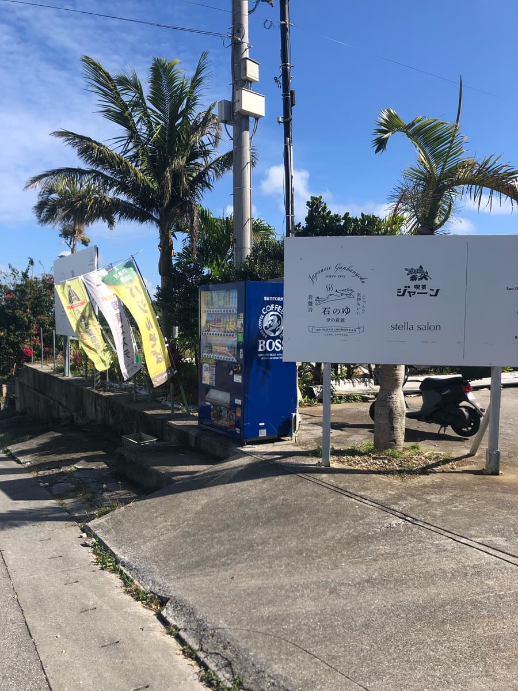
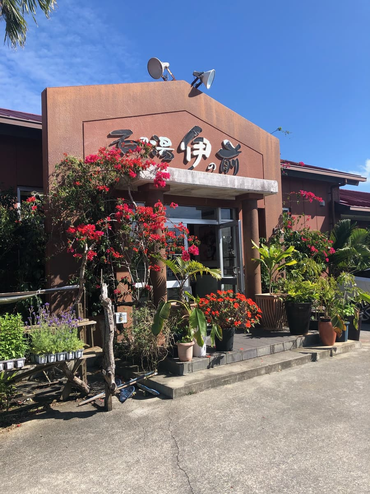
入口には「喫茶ジャーン」さんの名前があったので、こちらと思って入ったのですが、建物の名前は「石の湯伊の前」。あれ？と思いながら、店内に入り、店員に「沖縄そばはこちらですか？」と質問したら、「どうぞ」と店内の奥に案内されました。あっていて良かったです😄
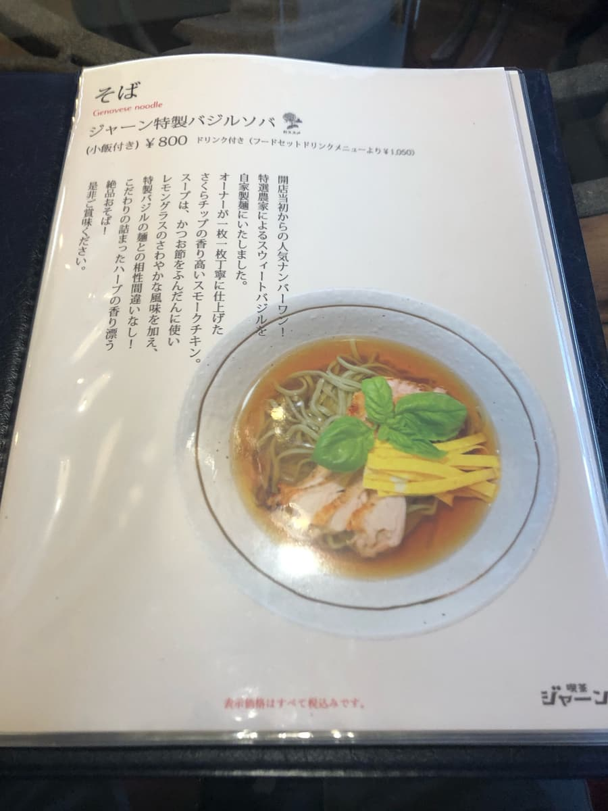
メニュー表の最初には新聞で紹介されていた「バジルソバ」。こちらを注文😄
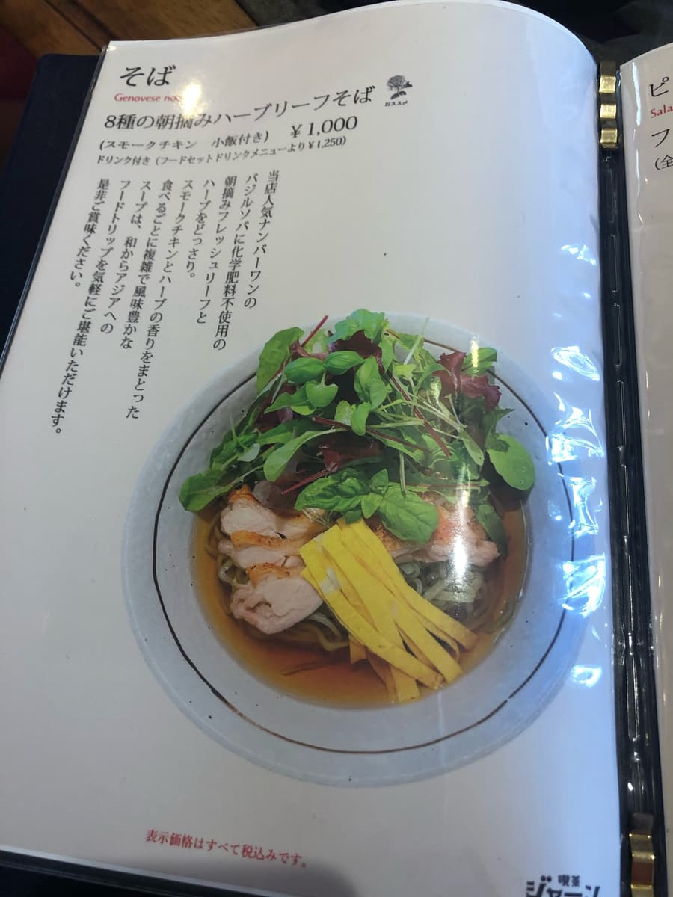
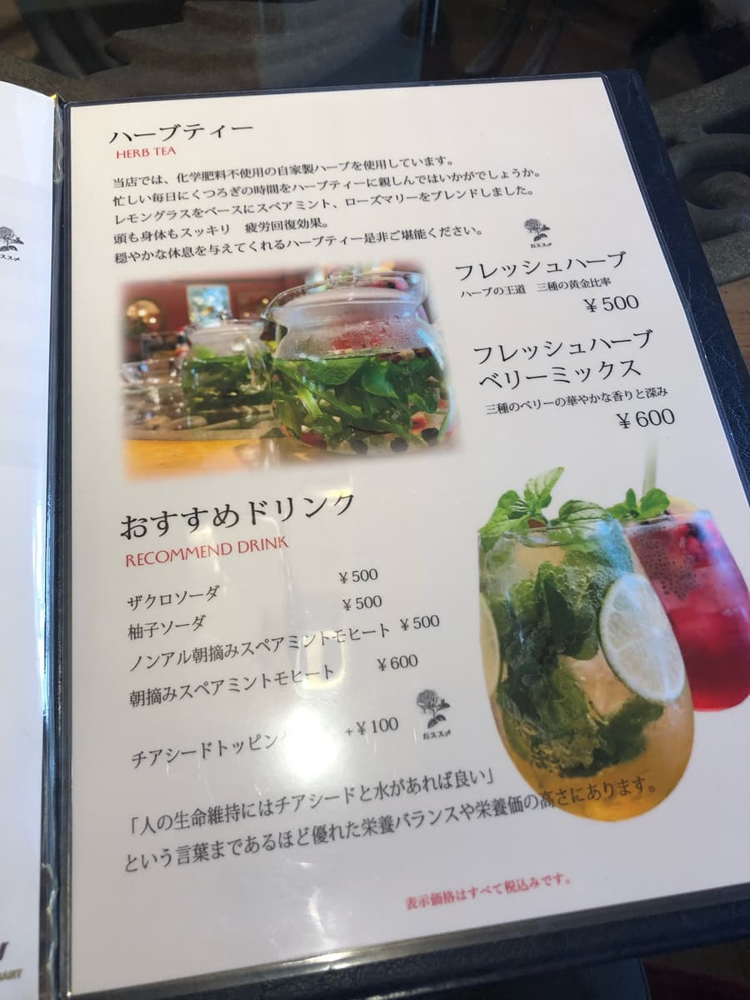
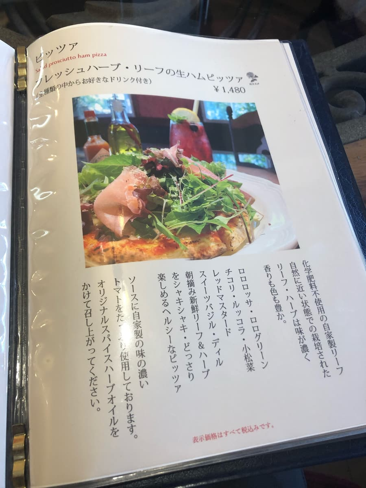
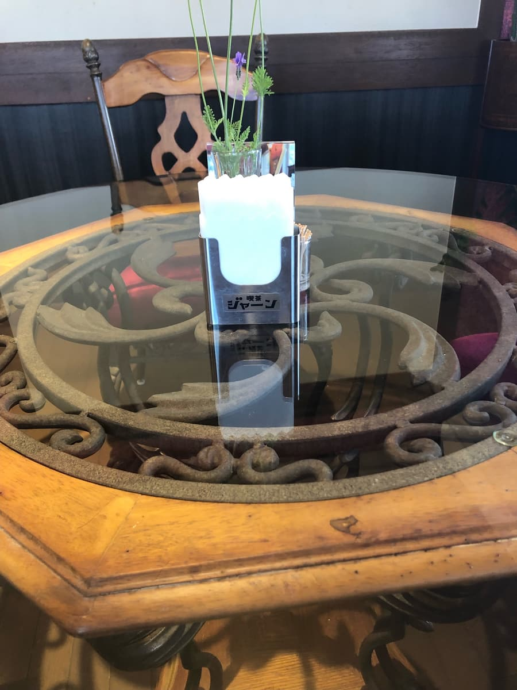
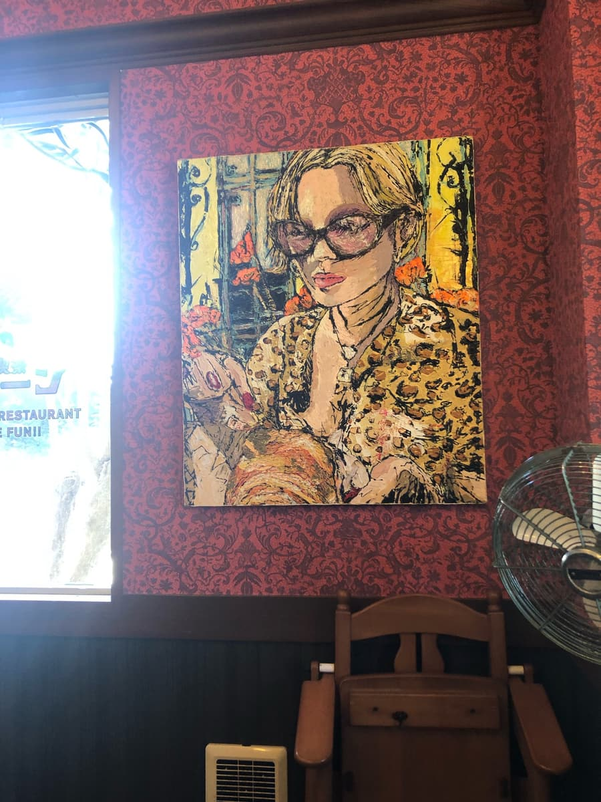
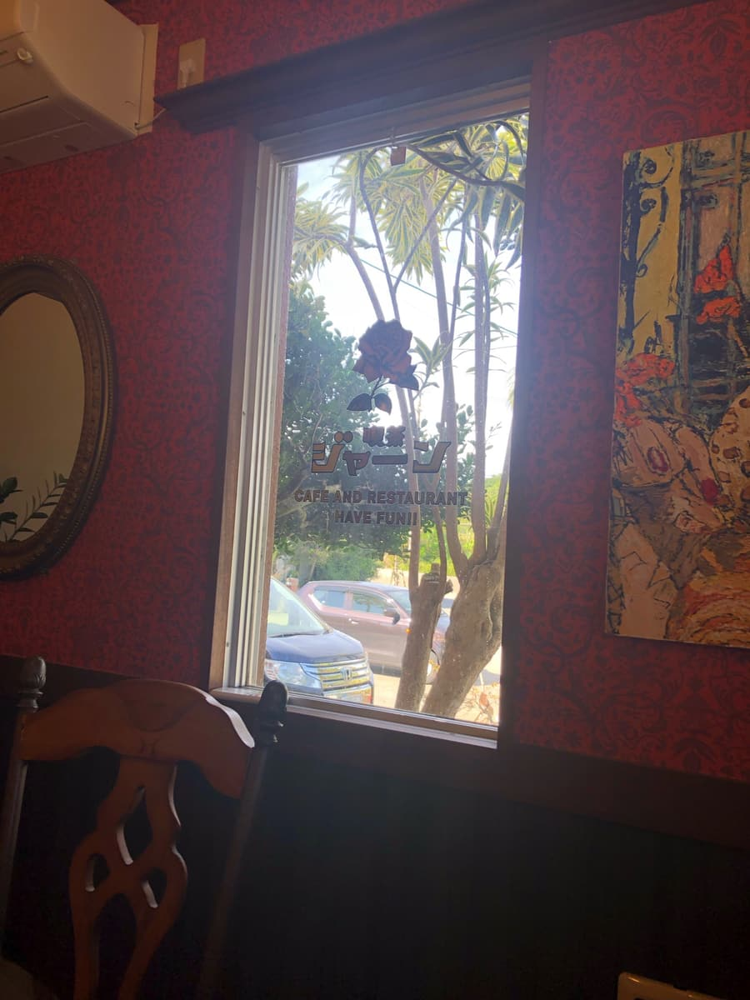
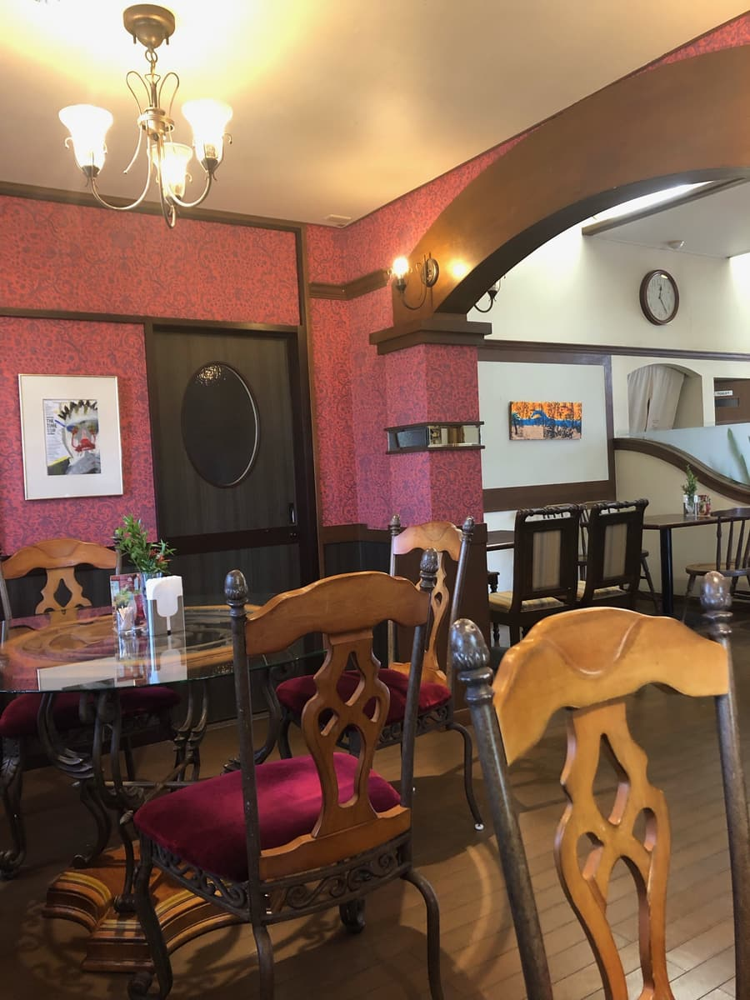
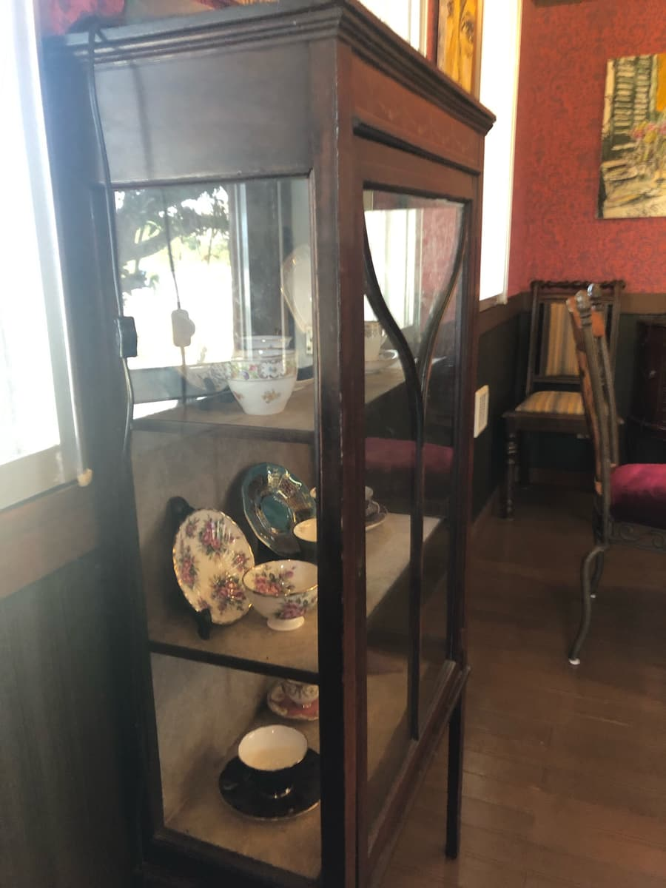
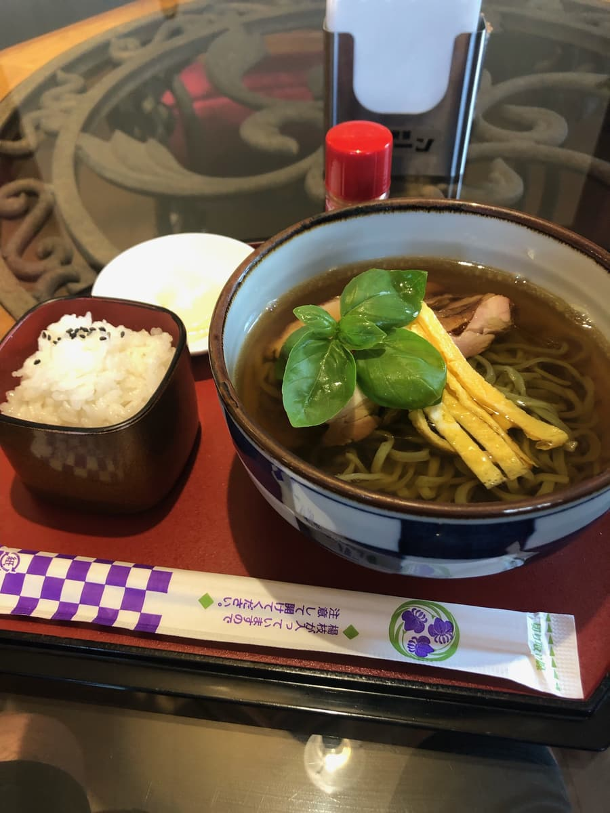
店内を観察している間に「バジルソバ」来ました😄
まずはスープを味わいます😋
メニュー表説明のとおり鰹出汁が効いたスープにレモングラスが入っているようで、ほんのり爽やかな酸味が感じられます。他店には無い新しい味です。普通に合います、美味しいですね😋
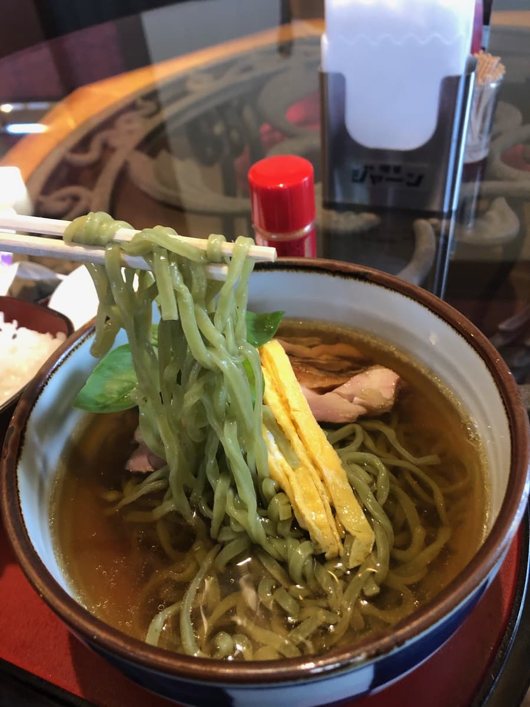
次に麺を頂きます。自家製麺は細麺で、スウィートバジルが練り込まれているためきれいな緑色の麺です😄
風味が良い感じですね、こちらも普通に美味しい。写真に少ししか映っていませんが、具材は沖縄そばで使用される豚肉では無く、さくらチップでスモークしたチキン。こちらも良い感じですね😁
評価（9点/15点）：新しい感覚の沖縄そばです。店内もレトロ感のある喫茶店な感じで、ゆっくり食べることが出来ると思いますので近くに寄った際には一度は如何でしょうか？
麺 ：★★★☆☆（3）
スープ：★★★☆☆（3）
具 ：★★★☆☆（3）